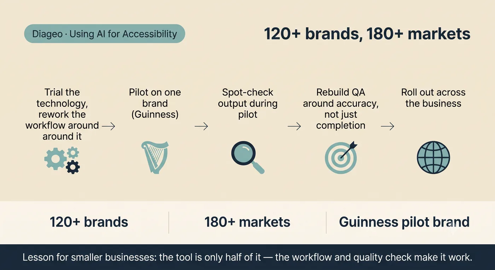

Using AI to write Alt Text for thousands of images, across 120+ brands
Diageo · Global Head of UX & Design DTC, 2018–2025
A global drinks company running well over a hundred brands had a genuine accessibility problem hiding in plain sight. Every product shot, campaign image and banner across its websites needed Alt Text, the short written description screen readers rely on. At a few dozen images that is an afternoon's work. At this scale, across 120+ brands, 180 markets and multiple languages, it had become effectively impossible to do by hand.
The brief
Find a simple, repeatable way to produce accurate Alt Text for thousands of images, in every language the business publishes in, without hiring an army of copywriters, and without shipping generic descriptions that technically fill the field but help nobody.
The approach
- Trialled the technology first and reworked the workflow around it, rather than bolting AI onto the process that already existed
- Piloted it on a single brand, Guinness, small enough to learn from properly, big enough to be a real test
- Ran spot checks on the output during the pilot, then made revisions based on what those checks exposed
- Rebuilt the QA step around the thing that actually mattered: whether each description was valid, accurate and good enough to publish, not just whether the field had been filled
- Rolled it out to other sites across the business once the workflow and the quality checks were holding up
Why it matters for a smaller business
Very few small businesses have thousands of images to describe. But most have some version of the same problem: a job that genuinely matters, that nobody has time to do properly, and that quietly gets skipped. The lesson here transfers directly, the tool was only half of it. What made it work was redesigning the workflow around the tool, proving it on one contained pilot, and building a quality check that asked whether the output was actually any good. Same order of operations, whatever the size of the business.